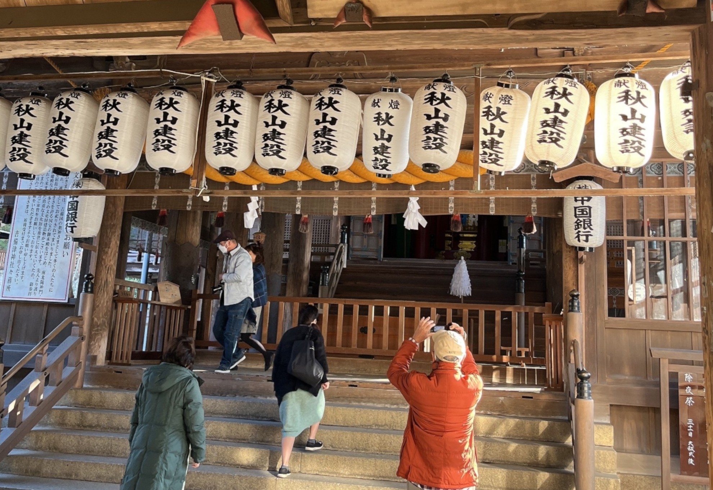
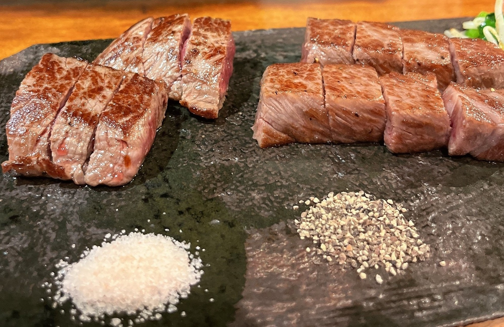
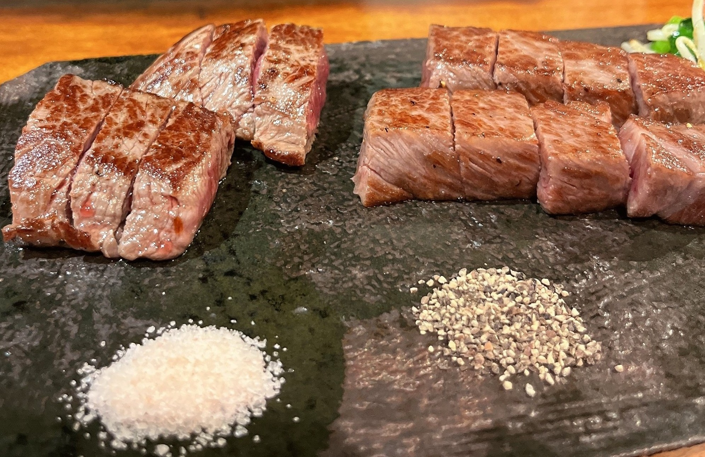

～岡山県＆広島県編～
2022年12月6日～8日に岡山県と広島県を旅行した記事になります！
まずは吾妻寿司で地元の海鮮を堪能！
今回は岡山地物入十二貫を頂きました！
岡山直結のさんすて岡山内のため電車の方でも行きやすいお店でした！
新鮮なネタがとても美味しくウニも臭みが全くなく大満足です！
お店：吾妻寿司 岡山駅店
営業時間：11:00～22:00
定休日：なし
予約可否：予約不可
駐車場：あり（岡山駅駐車場）
TEL：086-227-7337
住所：岡山県岡山市北区駅元町1-1 さんすて岡山2F
URL：食べログで見る
岡山県の観光名所！岡山城！
烏城とも呼ばれる漆黒の外観に惹かれる岡山城！
金の鯱がさらに見栄えを良くしている最高のお城でした！
日本三名園のひとつ！後楽園を散策！
日本三名園のひとつとして有名な後楽園！
園内から見える岡山城はまさに圧巻です！
後楽園
営業時間：3月20日～9月30日 7:30～18:00
10月1日～3月19日 8:00～17:00定休日：なし
駐車場：あり 普通車：40分あたり100円
TEL：086-272-1148
住所：岡山市北区後楽園1-5
URL： 後楽園公式サイト
吉備津神社

吉備津造の建築様式で有名な吉備津神社！
国宝にも指定されている岡山県を代表する神社となります！
桃太郎のお話のもととも云われている伝承が残る神社でもあります！
吉備津神社（きびつじんじゃ）
営業時間：開門5:00、閉門18:00（授与所9:00～14:30）
定休日：なし
駐車場：あり
TEL：086-287-4111
住所：岡山県岡山市北区吉備津931
URL： 吉備津神社公式サイト
最上稲荷

正式名称は「最上稲荷山妙教寺」！
神仏習合の祭祀形態が許された貴重な最上稲荷！
お寺と神宮の要素を併せ持つ日蓮宗寺院となります！
かき傳
今回はカキフライ定食を頂きました！
サクサクの衣とジューシーなカキの風味が最高でした！
お店：かき傳
営業時間：17:00～22:00(月)
11:00～14:00、17:00～22:00(火・水・木・金・土)定休日：日曜日
予約可否：予約可
駐車場：あり(お店の前に3台)
TEL：050-5593-6148
住所：広島県広島市東区光町2-8-24
URL：
食べログでの予約はこちら
広島護國神社
明治元年に創建された由緒ある神社となります！
天皇皇后両陛下（昭和天皇）が御親拝されたこともある有名な神社です！
広島護國神社
営業時間：6:00～16:30(授与所9:00～16:30)
定休日：なし
駐車場：あり
TEL：082-221-5590
住所：広島市中区基町21番2号
URL： 広島護國神社公式サイト
広島城
毛利元就の孫である毛利輝元が初代城主の広島城！
原爆ドームからも近い広島市にあり観光しやすいお城になります！
広島城
営業時間：3月から11月 9:00～18:00
12月から2月 9:00～17:00定休日：12月29日～12月31日
駐車場：なし
TEL：082-221-7512
住所：広島市中区基町21番1号
URL： 広島城公式サイト
原爆ドーム
厳島神社

広島の観光名所といえば宮島の厳島神社！
有名な鳥居は時間帯によっては近くまで歩いて見に行くことができます！
厳島神社
営業時間：3月1日～10月14日 6:30～18:00
10月15日～11月30日 6:30～17:30定休日：なし
駐車場：なし
TEL：0829-44-2020
住所：広島県廿日市市宮島町1-1
URL： 厳島神社公式サイト
豊国神社
厳島神社 境外摂末社のうちのひとつである豊国神社！
千畳閣(せんじょうかく)とも呼ばれ重要文化財にも指定されております！
福山城

10万石という広さを誇る福山城！
現在の最寄り駅ももとはお城の領土内とのこと！
お城に泊まれるキャッスルステイもありますので興味のあるかたは是非！
かき小屋

広島名物のカキを炭火で焼いて頂けるお店です！
炭火の香りとカキのおいしさを最大限に楽しめる最高のお店でした！
お店：かき小屋 尾道店
営業時間：11:00～15:00 17:00～21:00
定休日：火・水 12月31日、1月1日
予約可否：予約可
駐車場：あり
TEL：090-7990-5818
住所：広島県尾道市山波町298-1
URL：
姫路城
大阪への帰りの途中でずっと行きたかった姫路城に行きました！
別名「白鷺城」とも言われる元となった白い城壁はとても美しく優雅です！
世界文化遺産に登録されているのも納得です！
姫路城
営業時間：9:00～17:00
定休日：12月29日～30日
予約可否：2025年4月1日よりデジタル券の事前購入が可能です
デジタルチケット購入画面URL駐車場：あり 普通車：3時間以内600円
住所：兵庫県姫路市本町68
URL：姫路市公式ウェブサイト
志ん
 

A5ランクの神戸牛を目の前で鉄板で焼いてくれる最高のお店です！
野菜も有機野菜を使っておりすべてがおいしいお店でした！
神戸三ノ宮駅から非常に近くアクセスもよいので気軽に行けるのもおすすめポイントです！
お店：志ん（しん）
営業時間：11:30～15:30 17:30～22:30
定休日：月曜日
予約可否：予約可
駐車場：なし
TEL：078-391-4588
住所：兵庫県神戸市中央区北長狭通2丁目10-12 SEIGYOビル2Ｆ
URL：


いかがでしたでしょうか！
少しでも旅行プランの参考になれば幸いです！
宮島にある揚げもみじというもみじ饅頭を揚げたものも
とても美味しかったので是非食べて頂きたいです！